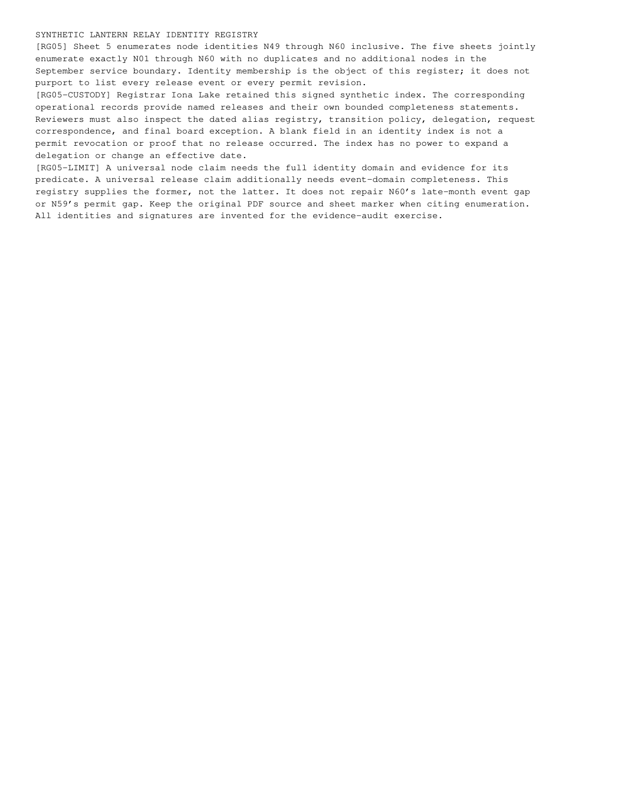

registry-5.png
Published path: runs/10-distributed-assurance-correct/visual-review/registry-5.png
Open / download original bytes

validation/runs/10-distributed-assurance-correct/visual-review/registry-5.png · 122,511 bytes · SHA-256 60424aa10499dbd2552d53f0b3d9348c17b7aa378fd34044e3d2c4ae60208159
